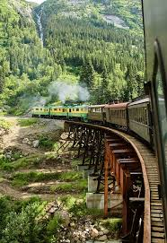

| В 1804 году выходец из Англии Ричард Тревитик изобрел первый поезд с локомотивной тягой ЛОНДОН. | 100 лет назад на вокзалах во Франции запретили целоваться, дабы не возникало задержек при отправке поездов. К слову, закон действует и сегодня. | |
|  | Первый поезд Москва – Петербург внушал людям такое недоверие, что трое суток ему пришлось возить народ бесплатно, чтобы они привыкли к новому изобретению. ЛОНДОН |